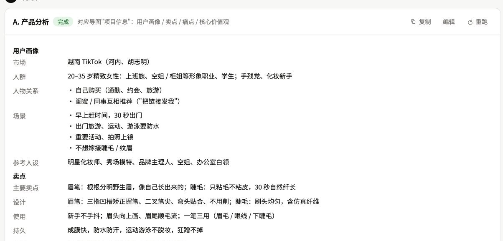

Short Video Content Workbench
Built for a short-video operations team in Vietnam. The pain: the first script draft for a new product takes several people several days, and the shot-by-shot breakdown standard lives in each person's head. Made into a web tool: upload the material, AI analyzes the product and the viral videos, scripts come out in batches, people review and export.
Baseline → TargetOne week → three days → under half a day
One week without AI, three days with general AI; the workbench targets under half a day, pilot timing in progress
Who uses itVietnam short-video operations, pilot on a real project
StatusIn testing · v0.15
How it works
Three steps: input → AI analysis → scripts
BeforeSeveral people, each on their own experience, days for a first draftAfterUpload material, run in sequence, people only review and tick
01InputHuman
- Product info, brand brief, platform data screenshots, a few viral videos
02AI analysisAI
- Product analysis: user persona, selling points, pain points, scenes → audience × pain point × selling point matching table
- Viral video analysis: each video broken into structure, hook, selling lines, ending; a frame-by-frame breakdown table (time · visual · voiceover); several videos summarized into high-frequency hooks and selling lines
03ScriptsAI + Human
- Batch-generated by audience and structure; each script split into first 3 seconds, middle and ending, with voiceover and visuals written separately; wording only drawn from the team's own hook library and phrase library
- People review, adopt and export a shooting sheet for the director; scripts that perform well get first-3-second variants and go into the script library
What it looks like
Three panels, matching the three steps above.
